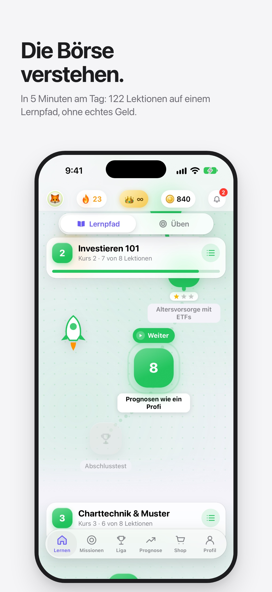
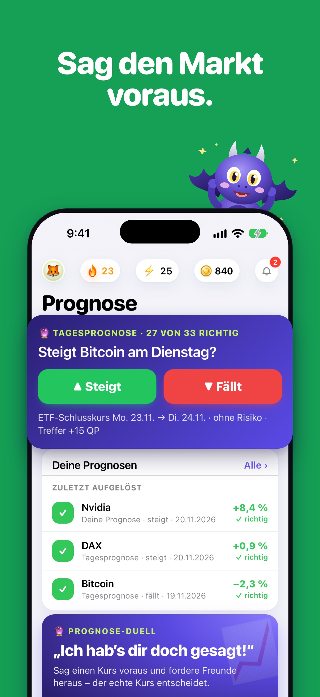
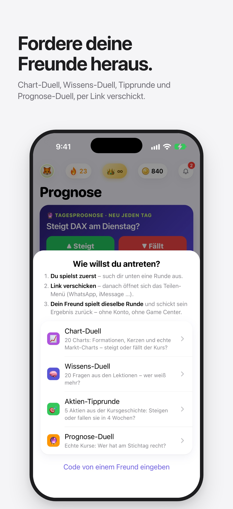

Presse
Börse lernen wie ein Spiel – fünf Minuten am Tag, ohne echtes Geld.
Hier findest du alles für einen Artikel, einen Test oder ein Video über InQuestly: Kurzbeschreibung, Fakten, Bildmaterial und den direkten Kontakt zum Entwickler.
Kurz erklärt
InQuestly ist eine iPhone-App aus Stuttgart, die Börsenwissen in kurze, spielerische Lerneinheiten verpackt. 122 Lektionen in 16 aufeinander aufbauenden Kursen führen vom ersten ETF-Sparplan bis zur Charttechnik. Geübt wird direkt nach jeder Lektion: mit 96 Chart- und Kerzenmustern, 14 historischen Fallstudien wie dem Corona-Crash oder dem GameStop-Hype und einer Wochen-Challenge, in der alle dieselben Aufgaben bekommen.
Herzstück ist die Prognose: Wer glaubt, „Nvidia steigt diesen Monat“, tippt das einfach ein. InQuestly macht daraus eine Prognose, die am Stichtag mit dem echten Schlusskurs ausgewertet wird. Freunde lassen sich per Link zum Prognose- oder Chart-Duell herausfordern, ohne Konto. Es geht um Punkte, nie um echtes Geld.
Die Grundlagen sind dauerhaft kostenlos, darunter „Investieren 101“ mit Sparplan und ETFs. InQuestly Pro schaltet alle Kurse frei und entfernt die Werbung.
Fakten
- Name
- InQuestly: Börse lernen
- Plattform
- iPhone (iOS), Deutsch und Englisch
- Im App Store seit
- 20. November 2026
- Preis
- Kostenlos mit In-App-Käufen. InQuestly Pro: 7,99 € im Monat, 49,99 € im Jahr oder 129,99 € einmalig.
- Inhalte
- 16 Kurse, 122 Lektionen mit Quiz, 96 Chart- & Kerzenmuster, 14 historische Fallstudien, 17 Trainer & Spiele
- Altersfreigabe
- 16+
- Konto
- Nicht nötig. Der Fortschritt bleibt auf dem iPhone und in der eigenen iCloud.
- Entwickler
- Fotiadis Apps, Stathis Fotiadis, Stuttgart
- Links
- App Store · Webseite · Börsen-Quiz im Browser · TikTok · YouTube · Instagram
Bildmaterial
App-Symbol und App-Store-Bilder (Deutsch und Englisch, 1206 × 2622) dürfen für Berichte über InQuestly frei verwendet werden.



Pressepaket laden (ZIP)App-Symbol (PNG)

Das Paket enthält das App-Symbol (1024 und 512 px), alle App-Store-Bilder auf Deutsch und Englisch und die Pressetexte als Textdatei.
Pressekontakt
Für Fragen, Interviews oder einen Pro-Zugang zum Testen:
Stathis Fotiadis, Entwicklersupport@fotiadisapps.de
Gut zu wissen
- InQuestly ist eine Lern-App und gibt keine Anlageberatung.
- Prognosen werden mit echten Tagesschlusskursen ausgewertet. Die Kursverläufe in Fallstudien und Übungscharts sind nachgebildet: Die Schlusskurse an den Stichtagen stimmen, die Tage dazwischen sind simuliert.
- Pro-Inhalte sind in der App als Pro gekennzeichnet.
© 2026 Fotiadis Apps · InQuestly ist eine beim Deutschen Patent- und Markenamt angemeldete Marke.